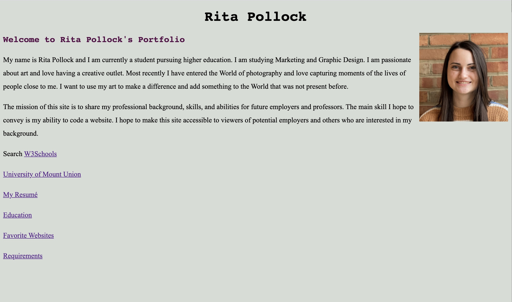
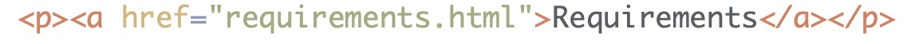
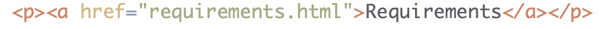
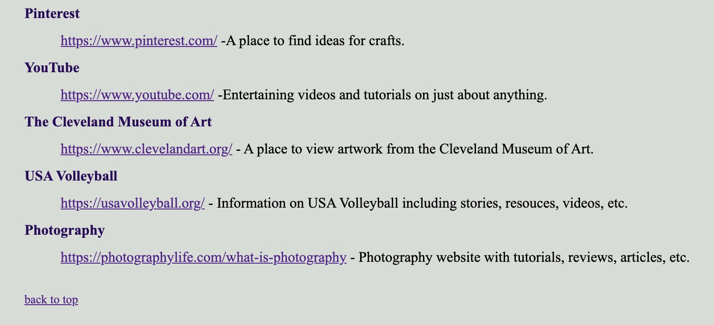
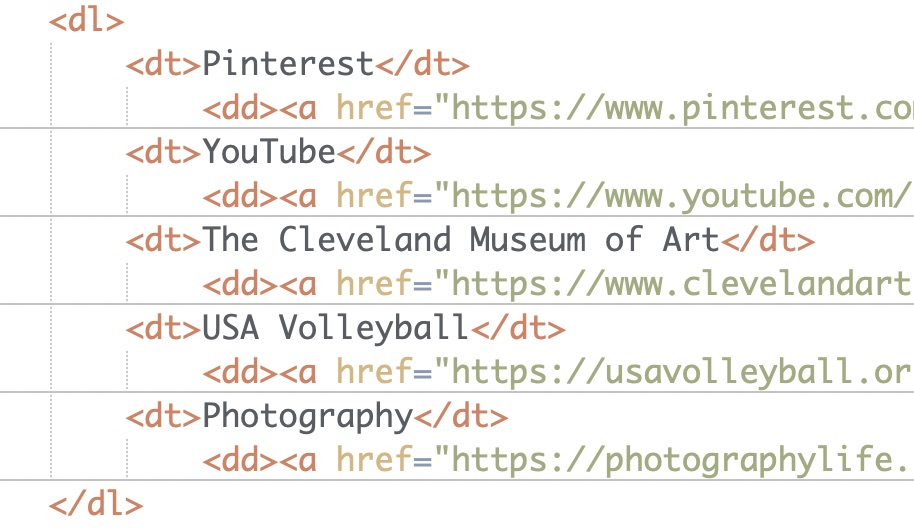
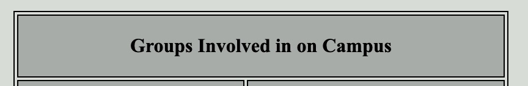
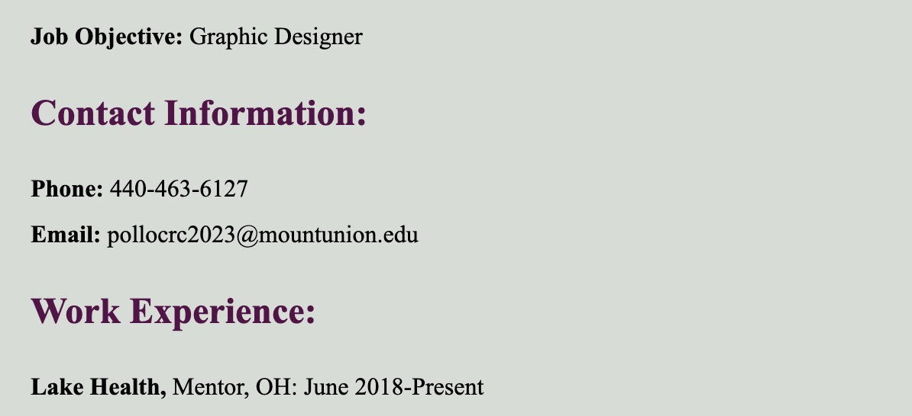
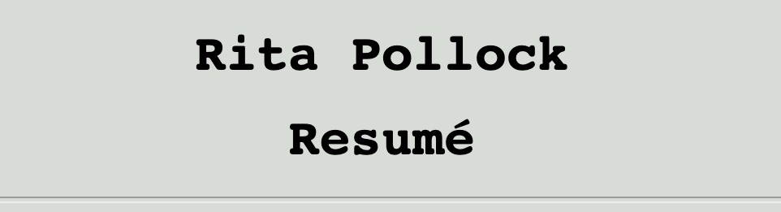
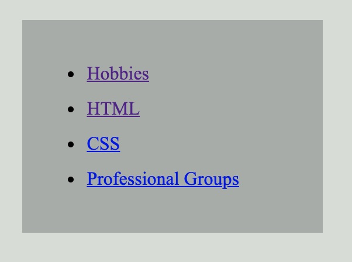

Rita Pollock
Requirement Summary Page
- Chapter 1: Structure
- 
 Body tag: The purpose of this tag is it holds the content of your webpage you want
to be displayed.
Body tag: The purpose of this tag is it holds the content of your webpage you want
to be displayed.
The body tag is used on each webpage and contains all of the content of the HTML codes.
Everything displayed is within the body tags.
back to top
- Chapter 2: Text
 
Paragraph tag: This tag will display your content in paragraph form on a webpage. Each
new set of a paragraph tag will create a new paragraph with a separation from the previous one.

Paragraph tag: This tag will display your content in paragraph form on a webpage. Each
new set of a paragraph tag will create a new paragraph with a separation from the previous one.
This tag was used throughout my website to display content in a uniform manner.
back to top
- Chapter 3: Lists
- 

Definition lists: This is an element used for definition based information. It will display
on a webpage with a term and definition.
This is a helpful tag for using terms such as definitions or in this case to list several different
links under one category.
back to top
- Chapter 4: Links
-
 Mailto: This element creates a link outside of the webpage to the persons email address.
Mailto: This element creates a link outside of the webpage to the persons email address.
This tag is included in my website to give viewers a direct link to my email. It is included
on every page.
back to top
- Chapter 5: Images
-
 Source Tag: The src tag is a part of the image tag and provides the path to finding
the image file you are adding.
Source Tag: The src tag is a part of the image tag and provides the path to finding
the image file you are adding.
This attribute's purpose is to be able to add a picture of myself to the page. A picture
humanizes the website.
back to top
- Chapter 6: Tables
- 
 colspan: This element in a table allows you to make the cell the width of two columns.
colspan: This element in a table allows you to make the cell the width of two columns.
This attribute allows for the table to look more visually pleasing and I incorporated it
so that the design looked better.
back to top
- Chapter 8: Extra Markup

 id Attribute: This element particularly identifies one element from another including links.
id Attribute: This element particularly identifies one element from another including links.
This attribute was included so that a link could be created with internal jump
links.
back to top
- Chapter 10: Introducing CSS

 Style: This tag is used to add design to a Website.
Style: This tag is used to add design to a Website.
I used the style tag to add design elements a features to the table in order to have a nicer design.
back to top
- Chapter 11: Color
- 
 Background-Color: The background-color element is mainly used with CSS and it changes the webpage background
color.
Background-Color: The background-color element is mainly used with CSS and it changes the webpage background
color.
This is a very helpful attribute because it sets the design for the whole website by changing
the background color. I used it within my website in order to follow the same color scheme throughout.
back to top
- Chapter 12: Text
- 
 font-family: This element in CSS allows you to change the displaying font on the webpage. With this you
can also add several back up fonts if the first does not work on all devices.
font-family: This element in CSS allows you to change the displaying font on the webpage. With this you
can also add several back up fonts if the first does not work on all devices.
The purpose of this attribute is to change the font to a different design.
back to top
- Chapter 13: Boxes
 box-shadow: This element is used to cast a shadow around the box. The purpose is to
add a design element to the box. It makes the webpage look more three dimensional.
box-shadow: This element is used to cast a shadow around the box. The purpose is to
add a design element to the box. It makes the webpage look more three dimensional.
back to top
- Chapter 15: Layout
 position: sticky: The sticky positioning style element allows for the
selected information to stay on the screen as you scroll. Within each webpage on this
website, the naviagtion bar will stay at the top of the screen as the viewer scrolls.
The purpose of this is to make the experience of the viewer easier to naviagate the website.
position: sticky: The sticky positioning style element allows for the
selected information to stay on the screen as you scroll. Within each webpage on this
website, the naviagtion bar will stay at the top of the screen as the viewer scrolls.
The purpose of this is to make the experience of the viewer easier to naviagate the website.
back to top
- Chapter 17: HTML5 Layout
- 
 aside: The aside layout element is used to add a sidebar to the webpage.
The purpose of this element is to have a more organized webpage.
aside: The aside layout element is used to add a sidebar to the webpage.
The purpose of this element is to have a more organized webpage.
back to top
Home |
Resumé | Education | Favorites | Requirements | Layouts